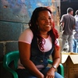

The MIF in 2015
We find ourselves at the end of another busy and fulfilling year at the MIF. We asked our colleagues Elizabeth Boggs Davidsen, Tomas Miller, and David Bloomgarden, who oversee the development and execution of new projects, to each share a few words about what they saw as the highlights of 2015 for their teams.
Access to Markets and Skills by Elizabeth Boggs Davidsen
This year, we focused a great deal on “corporate venturing for social innovation,” in other words, scaling up social innovation by engaging with companies that are integrating social and/or environmental concerns into their core business strategy. At the 2015 Foromic we explored this topic during a seminar on Impact Investing and Financing Social Enterprises: New Approaches to Bridging the Gap.
At the MIF we have several multi-stakeholder initiatives that are developing and supporting these kinds of corporate venture projects. 2015 highlights include:
- Regional Initiative for Inclusive Recycling (IRR): Phase two of this platform, which was launched in 2011 and to date has benefited 17,700 recyclers and 300 municipal officers in 15 countries, was approved.
- New Employment Opportunities for Youth (NEO): In 2015, three new NEO initiatives were approved in El Salvador, Jamaica, and Peru, with a combined total of 42,000 youth beneficiaries. To date, NEO is active in 12 countries and is on track to meet its goal of 500,000 youth trained in its first five years. We also welcomed two new members to the steering committee: Fundación Forge and SESI/CNI. But NEO is more than figures. 23-year-old Alejandra Cázares Delgado from Nuevo Leon, Mexico told us, “NEO helped me to get a job two weeks after finishing the training,” and for 19-year-old Maríel López from the Dominican Republic, NEO offered “the chance to learn a lot and solve problems.”
- Sustainable Agriculture, Food, and Environment (SAFE): Approved in 2015, SAFE aims to bring together actors with a common vision for tackling the challenges of sustainable agriculture and the inclusion of small farmers in global value chains. Seeking to benefit 150,000 smallholder farmers from Central America and the Andean region, the platform will leverage existing knowledge, expertise, and resources.
- SCALA: The SCALA facility promotes the development and scaling of innovative inclusive distribution networks. In addition to approving three new projects in 2015, with World Vision and Danone in Brazil, with the Clinton Foundation through its Clinton Giustra Enterprise Partnership in Peru, and with the Supply Hope social enterprise in Nicaragua, in October 2015 we held the second regional SCALA conference in Mexico City, consolidating SCALA as the knowledge hub in this area.
Access to Finance by Tomas Miller
Our unit focuses on finding innovative concepts in the areas of impact investment and financial inclusion, supporting them and testing their viability to be taken to scale.
This year, we supported two groundbreaking funds specializing in high-impact sectors (Acumen and Global Partnerships), and invested directly in a regional education platform that uses technology to reach low-income populations (Kuepa). We invested in a fund offering smart and patient capital to entrepreneurs seeking to grow (Ideas & Capital). We worked on the “missing middle” challenge facing small businesses seeking to grow with a direct equity investment in a commercial bank increasing its loan portfolio in this specific segment (Banco Pichincha Colombia) – this was also the first equity co-investment under the framework of a MIF-IIC initiative, as well as an investment in a regional fund that will provide alternative financing to growth-oriented small enterprises (the Missing Middle Growth Fund).
In broadening financial inclusion, we emphasized models with innovative features targeting rural and underserved populations, such as a guarantee facility unlocking credit for small producers and young entrepreneurs (AMC and ADEL Morazán). We also contributed to furthering inclusive financial markets by promoting savings, remittances, and insurance, and by supporting promising financial technologies. Again, our emphasis was on innovation, as in the case of a program to promote SME contributions to pension funds, an initiative to encourage savings through remittances (CEMLA), as well as an investment to expand electronic payments systems to low-income regions (Resonance Uruguay). We also added three more banks into our women entrepreneurshipBanking (weB) initiative (Banco Nacional de Costa Rica, BAC San José, and Banco Delta).
Our flagship events, Foromic and WeXchange, were once again recognized for their convening power, and our publications in the areas of rural financing, financial technology, and early-stage investing, contributed to furthering the knowledge agenda in these emerging areas.
Access to Basic Services and Green Growth by David Bloomgarden
I recently read that Exxon Mobil CEO Rex Tillerson and Elon Musk, creator of the Tesla electric car, agreed to support a carbon tax to address climate change. Talk about unlikely partners! But perhaps not surprising when considering that private actors are by nature practical and come up with solutions that respond to changing incentives. It is what they do best. And climate change is definitely changing market incentives.
Market actors can also craft solutions for challenges that have been the traditional concern of governments. Consider the impact of climate change on the most vulnerable people in Latin America and the Caribbean. Or the tenacious gaps in access to basic services in the region. We seek to address such challenges by unlocking the potential of private sector solutions. This past year has been a banner year for pioneering new solutions. Here are just a few highlights:
In basic services, we are applying the public-private partnership model typically used in infrastructure to solve social problems through our Social Impact Bond Facility, which in its first year of implementation has established an initial pipeline of pilot projects and enhanced collaboration with other parts of the IDB Group. Highlights include the State of Jalisco in Mexico beginning the design of a SIB, strong interest from governments in Chile and Brazil, a high-level dialogue at the Latin American Impact Investment Forum, the creation of working group with foundations, and the commencement of work knowledge products.
In Guyana, we have worked with the IDB energy department and the Global Environment Fund to install solar photovoltaic systems in schools and health clinics in hinterland villages. While the GEF and IDB developed the infrastructure and equipment, the MIF contribution is to develop community-level business models to maintain and operate the equipment. In addition to community-based business models, social enterprise can play a key role in complementing the work of the public sector to provide sustainable solutions for access to basic services. In Guatemala, for example, we supported an innovative pay-as-you-go solar model implemented by a social enterprise, Kengo. This enterprise has since received additional investment and is being scaled up in Central America and Africa.
The PROADAPT program builds climate resilience in small firms and supply chains, and promotes business opportunities related to the demand for climate resilience solutions. PROADAPTA SERTAO is the first project in the program and works with poor rural farmers and their cooperatives to build climate resilience and business opportunities related to climate change. PROADAPT is also conducting a first-ever market assessment with the Nordic Development Fund of the market for climate resilience solutions in three emerging markets, one each in LAC, Africa and Asia.
A very happy holiday season to all, and we are already looking forward to taking on a fresh set of challenges and accomplishments in the new year!
